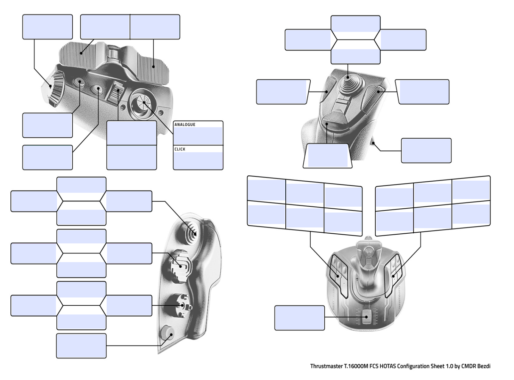

Connected devices
No joysticks detected. Plug both in, click this page, then press any button on each device.
Press or move a control to see what it is and what it's bound to.
Import into Star Citizen
- Click Save profile. Your browser downloads the XML file.
- Move that file into your Star Citizen install at
StarCitizen\LIVE\user\client\0\controls\mappings\ - In game: Options → Keybindings → Advanced Controls Customization → Control Profiles, pick the profile, and set both joystick slots to load.
- Or from the console (
~):pp_rebindkeys layout_FCS_exported - Stick and throttle swapped?
pp_resortdevices joystick 1 2
Actions you leave untouched keep the game's defaults. Unbound writes an empty bind, which removes the default from that device.
Preview XML
Profiles are processed in this browser only. Nothing is read from your game folders or uploaded to the Freight Planner server.
Each box shows what that control does in this profile. Press a control to light up its box; click a box to assign or remove actions.
